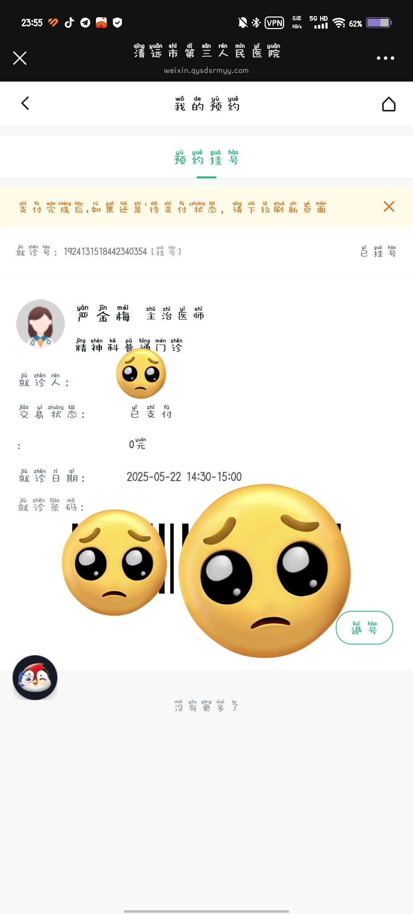

Rain Antares🏳️⚧️🍥
@Rain_Antar1121
@shuifenziya 抱你抱你抱你🥰❤️～
咱想想…首先得依赖医生有诚意…虽然看着不大可能
那就当白送的心理咨询吧…列个清单带着读呗
先说说自己的生理症状比如胸闷手抖之类的…再归纳一下负能来源比如GD和家庭和学校之类喵❛˓◞˂̵❤️
（1/2）

一个水分子🍥
@shuifenziya
闲着没事，发现可以免费挂号，但是我好像有好多想说的但是又不知道该说什么也不想浪费这次机会，求助推友我应该问些什么（？怪怪的为什么要求助）但是我真的不知道该说什么😭怀疑自己有好多病🥺帮帮忙求求各位
@Rain_Antar1121 https://t.co/yaXQDLcrdi